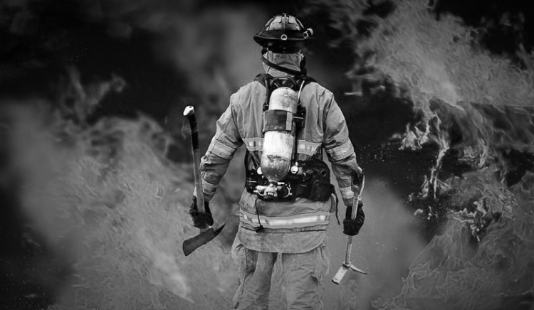

CONOCE NUESTROS INICIOS
NUESTRA HISTORIA
La Federación de Bomberos Voluntarios de la Provincia de Buenos Aires trabaja junto a asociaciones de todo el territorio provincial promoviendo la capacitación, el crecimiento institucional y el fortalecimiento del sistema bomberil. Nuestro compromiso es acompañar el desarrollo de los cuarteles y brindar herramientas para que cada bombero voluntario pueda desempeñar su labor de manera profesional, segura y eficiente.

¿POR QUÉ FORMAR PARTE?
Capacitación
Formación permanente para actuar ante emergencias.
Trabajo en Equipo
Integración con bomberos de toda la provincia.
Vocación de Servicio
Ayudá a quienes más lo necesitan.
CAPACITACIÓN BOMBEROS VOLUNTARIOS
REQUISITOS PARA INGRESAR
18 Años
Ser mayor de edad.
Apto Físico
Condiciones de salud adecuadas.
Residencia
Vivir cerca del cuartel.
Compromiso
Disponibilidad para capacitarse.
¿LISTO PARA SUMARTE?
Completá el formulario y comenzá tu camino como Bombero Voluntario.
Completar formulario